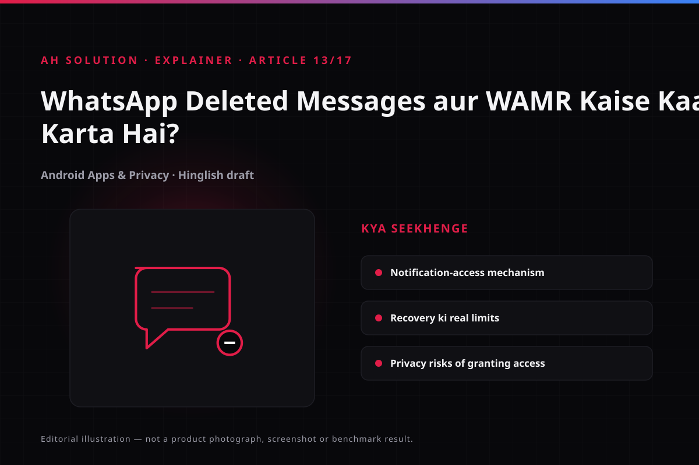

A message arrives on WhatsApp, you do not look at the notification, and the sender uses "Delete for Everyone" - is the message gone for good? The original AH Solution video (July 2020) addresses that frustration, with a tutorial for apps such as WAMR that promise to show deleted messages.
The main job of this article is to explain the honest mechanism: how WAMR works, how far it reaches and where it fails. In one line: no app can bypass WhatsApp's end-to-end encryption, and 100% recovery is not possible. These apps show content that arrived as a notification, and notification access is a significant privacy trade-off.
Original video: How to Read Deleted WhatsApp Messages! 😱 | WAMR App Tutorial Video published: 31 July 2020 · Duration: 04:35
What "Delete for Everyone" actually does
When a sender uses "Delete for Everyone", WhatsApp's server instructs the recipients' devices to delete the message. The recipient's app removes it and shows "This message was deleted" instead - see the WhatsApp Help Center.
Two points matter here:
- Encryption: messages are end-to-end encrypted, so the server does not read the plain content either (apart from metadata). No third party can pull a deleted message back from the server.
- Delete semantics: the feature recalls a message sent by mistake - an "unsend" for the sender, a disappearance for the receiver.
On the receiver's device the message is gone. So how do apps like WAMR still show it?
How WAMR works: the truth about notification access
The WAMR mechanism is built on Android Notification Access:
- You grant WAMR "Notification Access" (Settings > Special app access > Notification access).
- When a WhatsApp message arrives, Android issues a notification with the message text and sometimes the sender's name.
- WAMR reads that notification and saves a local copy on the phone.
- When the sender deletes the message, WhatsApp removes it from its database - but WAMR's saved copy remains in that app, which shows it to you.
A simple analogy: it is like keeping a photocopy. The original can go, your copy stays with you.
The same logic explains the limits: if no notification was delivered at all (the phone was off, or the app was restricted in the background), WAMR never had a copy.
The real limitations of recovery
Know the limits honestly:
- A notification is required: only notified messages are saved. If no notification arrived, the message cannot be recovered.
- Media only if it was already downloaded: if a photo or video was downloaded beforehand, it is in the phone's storage and may survive the deletion. Otherwise it is not.
- Never 100%: network issues, app restrictions, a restart or permission changes can stop recovery.
- It depends on the app: WhatsApp updates sometimes hide notification content (lock screen privacy, for example), which can affect the saved copy.
These apps were common around the time of the video (2020). Today the notification permission model and privacy expectations are stricter, so reliability is more variable. Do not rely on any app's promise of "100% recovery".
Privacy implications: the big question
Granting Notification Access means that app can read every notification on your phone, not just WhatsApp's: banking OTPs, email, SMS and messages from other apps, and copies of all of that can end up in its storage.

You may think "I gave it for WhatsApp only" - but the permission is granted at app level. Copying only WhatsApp messages is what WAMR does, while the raw notification stream reaches it in full.
So:
- Verify the app - who the developer is, what the reviews say, and where the data goes.
- Revoke the permission - when you no longer need it, disable the app under Settings > Special access > Notification access.
- Trust matters: never install a notification-access app from an unknown developer. The app safety framework is covered in our guides/choose-android-apps-safely.html guide.
For a broader view of permissions, see privacy.html.
Built-in Android notification history: no app needed
Android's own Notification History feature does the same job without any third-party app. It is available on Android 11 and later (manufacturers may treat it as optional, so the location can differ; the official steps are on Google Support).
Open Settings > Notifications > Notification history and turn on "Use notification history". Once enabled, recently dismissed notifications (24 hours by default) can be reviewed; on Samsung the path differs.
It has the same limit - it is notification-based. If a message was never notified, it will not be in the history either. And you do not have to give an unknown app notification access, because the system handles it. Try this built-in option first.
Setting realistic expectations
A realistic scenario: the message has been deleted, so what now?
- Check first: did a notification arrive? Did it flash? Is notification history on? If yes, the text may be there.
- Media case: was the file already downloaded? Check Gallery and Downloads - with auto-download it stays on the phone.
- Daily use: think before installing any app - is the privacy trade-off worth it?
- Legal case: a notification-based app is not proof; only an official WhatsApp export or a screenshot is dependable.
Troubleshooting and limitations
- WAMR is not saving anything: check notification access, restart the phone, and confirm WhatsApp notifications are on.
- Messages are missing: did a notification arrive? Was the phone on silent? Are there background restrictions in place?
- The app disappeared from the Play Store: apps are removed for policy reasons - use the built-in history instead.
- No recovery is found: that is normal. No 100% tool exists.
- Notification history is not showing: look for it under Settings > Notifications on your phone or OEM build.
Safety and privacy
- Notification access: the most important point - grant it only to a trusted app, and only when needed.
- Offline beats cloud: if an app offers a "backup" option, think carefully - your content is sent somewhere.
- Revoking the permission: uninstalling removes the permission automatically, but confirm it in Settings.
- Sensitive notifications: copies of OTPs and banking alerts reaching a third-party app is a serious risk. Read the guidelines on privacy.html.
- Legal angle: reading someone's private message without their knowledge may fall foul of the Indian IT Act and privacy norms. Keep to your own messages and device.
Frequently asked questions
Does WAMR really recover deleted WhatsApp messages 100% of the time?
No. Only a notification-based copy is kept, and only if the notification arrived in the first place. No app guarantees 100%.
How is this possible with end-to-end encryption?
The encryption is not bypassed. The app only reads the notification on your phone, which is decrypted on the device.
Can media messages be recovered?
Only when the media was already downloaded. Without a download, the file was never on the phone.
Can I see deleted messages without installing an app?
Yes - turn on the built-in notification history on Android 11 and later: Settings > Notifications > Notification history. It shows dismissed notifications from the past 24 hours.
Is granting notification access safe?
Only to a trusted, reputable app. The permission gives it all your notifications, banking OTPs included. Remove it as soon as you no longer need it.
Final recommendations
If your use case is only "a notification did arrive, I want to see it", you do not need an app like WAMR. Switch on Android's built-in notification history: no extra permission, no trade-off.
Before installing any recovery app, ask three questions: how much permission am I giving, where does the data go, and is the app trusted? If the answers are not satisfying, do not install it. Follow our guides/choose-android-apps-safely.html guide.
And the most important point: recovering a deleted message is never guaranteed. Where a record matters, take a screenshot or export in advance.
Resources and official links
- Google Support - Notifications and notification history - the official way to switch on notification history.
- WhatsApp Help Center - deleting messages - the official meaning of "Delete for Everyone", the two-day limit and recovery rules.
- Android Developers - Notification runtime permission - the official explanation of the notification permission on Android 13 and later.